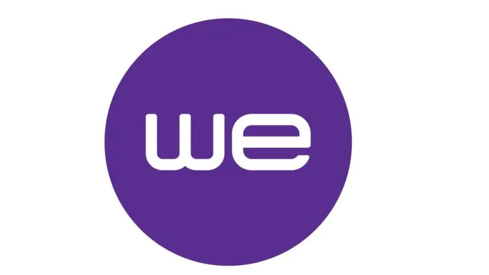

أقسام الدليل والخدمات الطبية
اختر القسم المطلوب للتصفح الفوريالمستشفيات الشريكة الرئيسية بالمنصورة
طلب موافقة طبية لموظفي WE
إرسال طلب موافقة طبية فوري معتمد إلى بريد مستشفى الخير (Elkhier.hospital@gmail.com) أو استعلام السلاب والحكمة بنقرة واحدة.

اللجنة النقابية للعاملين بالمصرية للاتصالات بالدقهلية
إرسال طلب موافقة طبية فوري معتمد إلى بريد مستشفى الخير (Elkhier.hospital@gmail.com) أو استعلام السلاب والحكمة بنقرة واحدة.